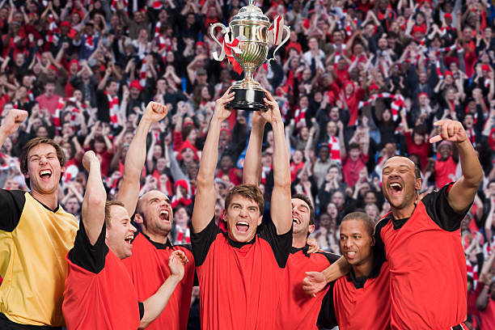
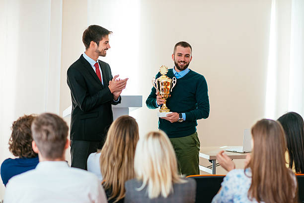

LEARNING ENGLISH ONLINE
OUR ACHIEVEMENTS
Forum (SEF) Fasihyuk brought glory for Indonesia. SEF debate team succeeded in winning Asian English Olympic (AEO) 2013 debate competition which was held on Sunday-Thursday (17-21/08/20). In this debate competition held in Bina Nusantara (Binus) University Indonesia, SEF debate team surpassed debate teams from Philippines, Malaysia, and teams from other universities with the assessment of international juries.
Asian English Olympic is an annual English Olympiad which is claimed to be the biggest in Asia. This Olympiad is held by Bina Nusantara English Club, and is a series of other competitions beside debate; such as speech delivering competition, news-casting, short-movie making, and other competitions. AEO 2013 debate competition was unique because its debate format was adopting British Parliamentary system, where there were 4 fractions; each of it played a role as opening and closing government, as well as opening and closing opposition!
Victory was achieved by this team for their success in defeated and refuted the arguments from other debate teams representing opposition, and because of the team contribution was greater than the debate team who was represented closing government fraction. "It's such a proud to win this debate competition. I'm also happy to both meet and learn from international juries to expand the insight of debate world internationally," said Vicario.